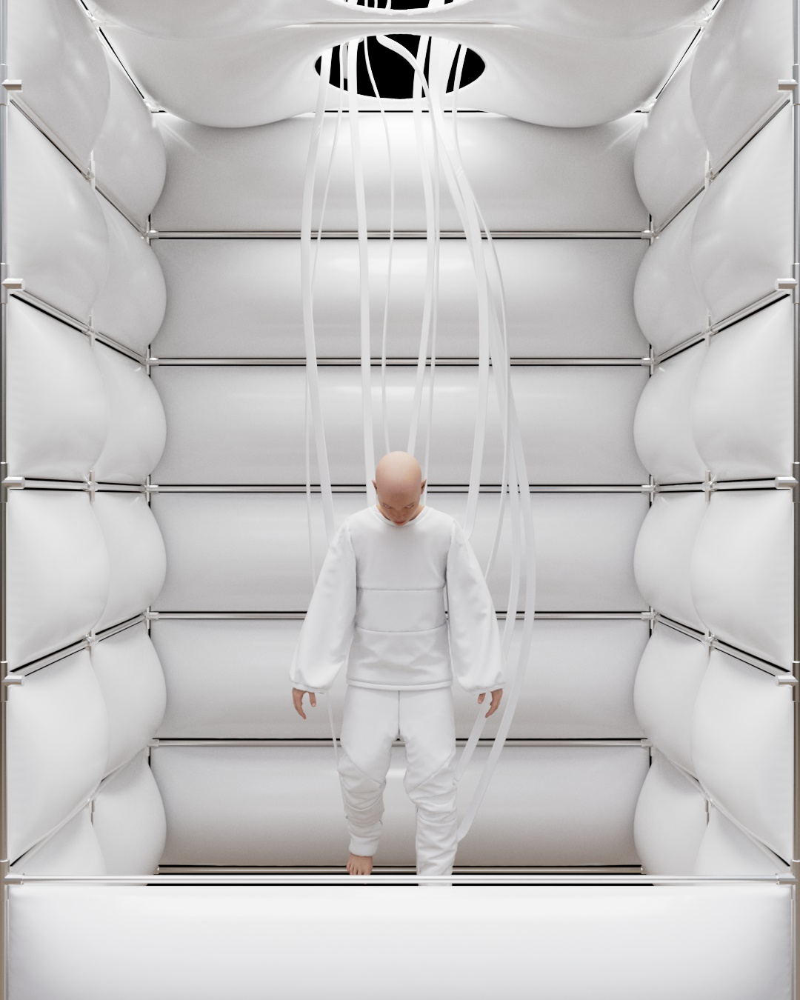
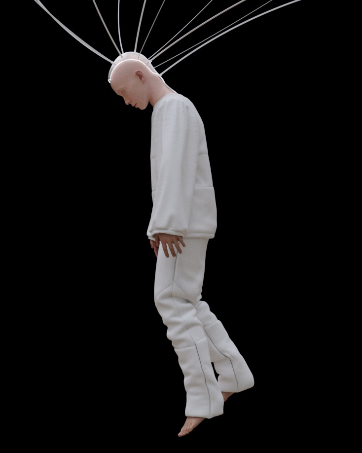
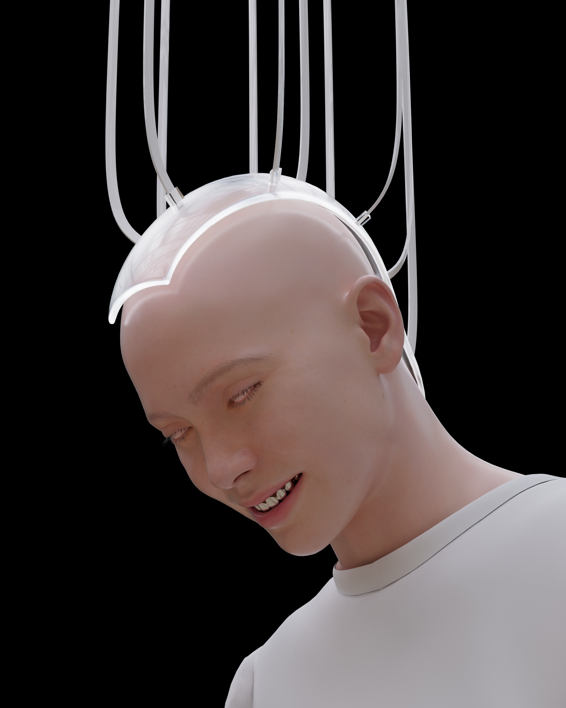
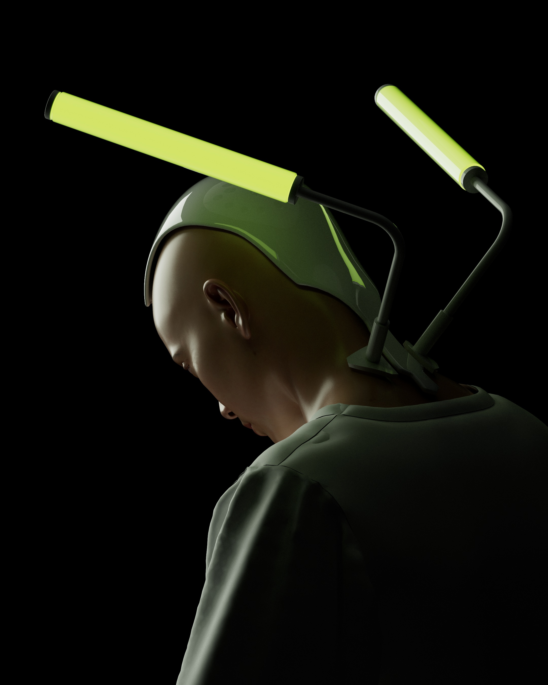
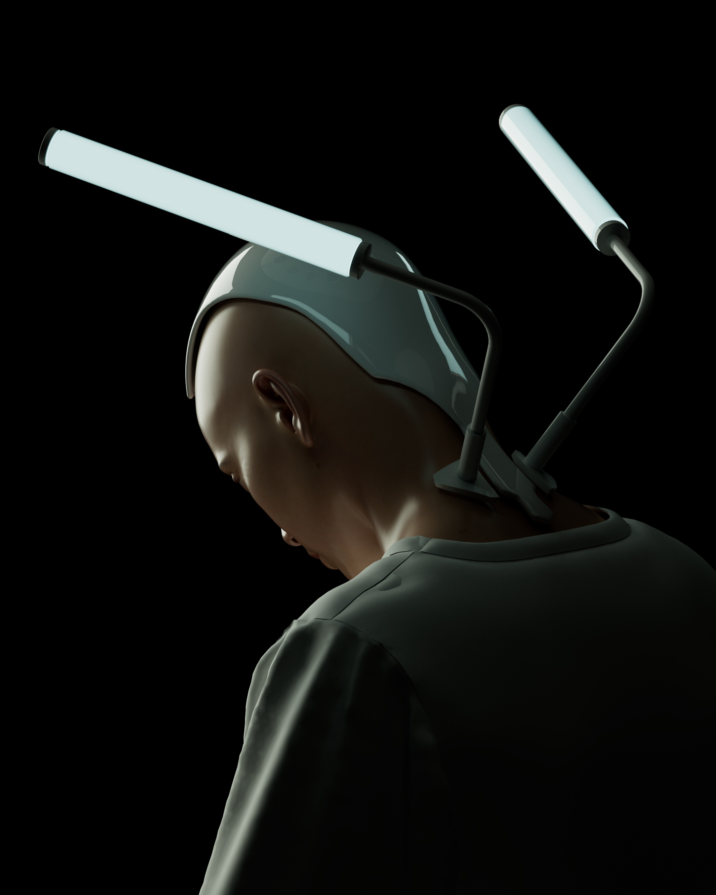
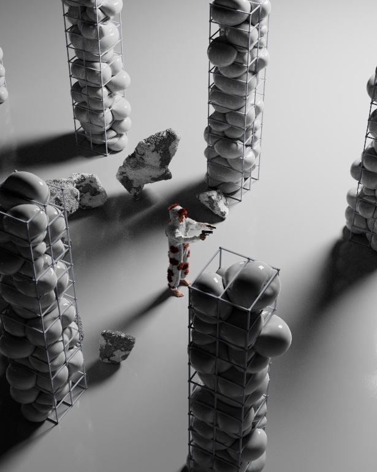
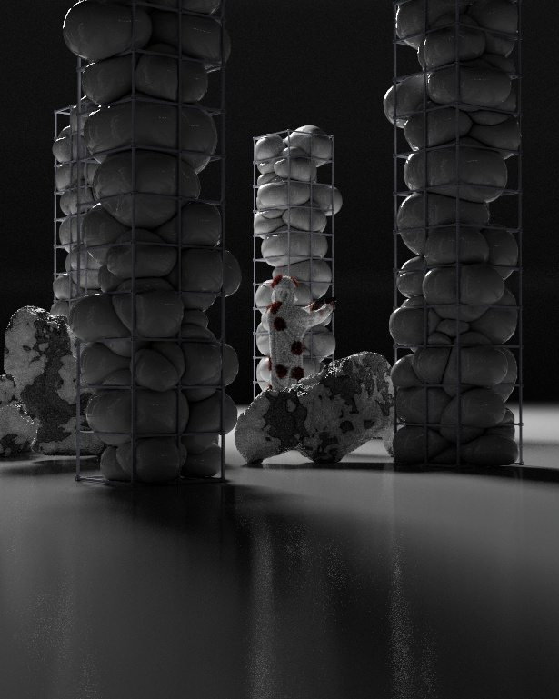
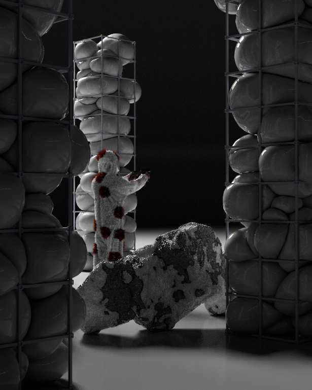
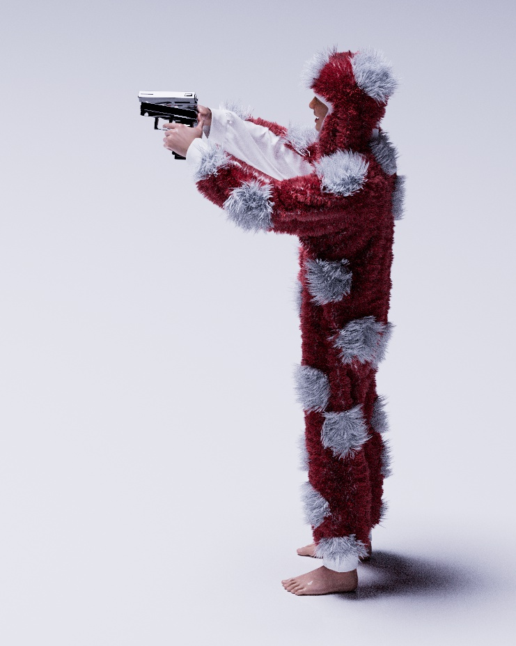

Procedural head pose rigMetahuman sketchFacetracking test 1Facetracking test 3Facetracking test 4Looping cables simulationMetahuman x Houdini – pass 1Metahuman x Houdini – pass 2TYM Spacecowboy Tour - Stage Visualizer & digital avatar
\
Stillframes Gallery









Unreal Engine Metahuman x Houdini
- workflow for procedural metahuman assets and simulations